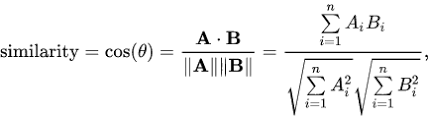

Similaridade de Imagens usando Vision Transformers no python
Jodavid Ferreira
Departamento de Estatística
Universidade Federal de Pernambuco
Início
- Maio/2024;
- Enchente no Rio Grande do Sul;
- Muitas pessoas desabrigadas;
- Muitos animais perdidos de seus donos;
Ideia neste tutorial
Fazer Scraping de Imagens
Ideia neste tutorial
Ideia neste tutorial
Ideia neste tutorial
Ideia neste tutorial
Desafio com imagens
Como posso garantir que nessas duas imagens estão o mesmo animal?
Imagens digitais
Imagens digitais
Espaço RGB de Cores
Um único pixel consiste de três componentes que variam entre [0,255].
Cada pixel e um vetor:
Pixel na imagem
Imagens digitais
Em geral define-se em três como o número de cores primarias em um espaço, devido ao fato do olho humano possuírem três tipos de fotorreceptores.
A partir destas cores primarias, é possível gerar todas as outras cores do espaço.
Representação como pontos de um espaço 3D de Cor
Cores criadas com o vetor R,G,B
Imagens digitais
Entretanto, existem outras formas de representar cores, como o espaço CMYK.
O padrão RGB tem síntese aditiva, e é conhecido como cor luz, pois quando as três cores são sobrepostas formam o branco. Já o CMY tem síntese substrativa (também conhecido como pigmento), pois quando sobrepostas, as três cores formam a cor preto (K).
- Que são as cores que são utilizadas em impressoras.
Processamento de Imagens com
Deep Learning
Redes Neurais Convolucionais
Um pouco de história
- O ImageNet Large-Scale Visual Recognition Challenge (ILSVRC) era uma competição anual de reconhecimento visual em larga escala, que começou em 2010 e ocorreu até 2017. A competição era baseada no banco de dados ImageNet, que contém milhões de imagens anotadas em milhares de categorias.

- O dataset ImageNet contém 14.197.122 imagens rotuladas, com 20.000 categorias de objetos, sendo que cada categoria contém pelo menos 500 imagens.
Redes Neurais Convolucionais
Um pouco de história
- Em 2012, a equipe da Universidade de Toronto, liderada por Alex Krizhevsky, Ilya Sutskever e Geoffrey Hinton, desenvolveu uma CNN chamada AlexNet (paper), que obteve uma precisão de erro de 16,4%, superando significativamente os métodos tradicionais e significativamente melhor que o segundo colocado do mesmo ano, que teve uma taxa de erro de 26,2%.

Redes Neurais Convolucionais
- As Redes Neurais Convolucionais (CNNs) continuaram atraindo a atenção após vencerem o Desafio ImageNet até o ano de 2017.
- Em 2017, a SENet (https://arxiv.org/abs/1709.01507) alcançou uma taxa de erro de 2,3% em 2017.
Redes Neurais Convolucionais

- A Figura acima mostra uma arquitetura típica de uma rede neural convolucional que contém uma camada de entrada, camadas convolucionais, camadas de pooling (subamostragem, ou down sampling), camadas de ativação, camadas totalmente conectadas e uma camada de saída.
ViT - Visual Transformers
Junho/2021: Autores da Google Research publicaram o artigo “An Image is Worth 16x16 Words: Transformers for Image Recognition at Scale” (paper).
Segundo os autores, inspirados pelos sucessos do escalonamento de Transformers em NLP (Processamento de Linguagem Natural), experimentaram aplicar um Transformer padrão diretamente às imagens, com o mínimo de modificações possível.
ViT - Visual Transformers

Tokens e Embeddings
- Tokens e Embeddings são a base dos modelos baseados em atenção e transformers.
No contexto textual, a tokenização é o processo de pegar o texto e transformar as sequências de entrada em representação numérica.
- é um mapeamento direto de palavras para números, uma mesma palavra vai receber o mesmo token (pode ser modelado, mas rapidamente se torna muito grande).
- os tokens geralmente são palavras, mas também podem ser frases, sinais de pontuação ou até caracteres individuais.
- A tokenização é o primeiro passo no processamento de linguagem natural (NLP) e é essencial para a pré-processamento de texto.
- ela ajuda a preparar os dados textuais para análise, tornando-os mais estruturados.
Tokens e Embeddings
Apesar da referência, palavras grandes podem ser divididas em subtokens menores, sendo assim, em 1.000 tokens de palavras em português correspondem aproximadamente a aproximadamente 700 a 750 palavras do nosso idioma.
Essa contagem de palavras em um texto pode variar dependendo da linguagem, do tamanho das palavras e do uso de pontuações.

Tokens e Embeddings
Embeddings são vetores numéricos obtidos dos tokens e representam palavras, frases ou documentos.
Os embeddings é o processo de transformar o mapeamento do vetor de texto de entrada em uma representação matricial1.
Os embeddings possuem uma melhor representação do relacionamento entre os tokens.
Os embeddings conseguem capturar a estrutura semântica das palavras ou frases e suas relações no texto.
Atualmente, elas são criadas usando técnicas de machine learning, como Word2Vec ou GloVe e deep learning, como BERT, GPT-3, e os modelos mais atuais de LLMs.
Tokens e Embeddings
Os embeddings podem ter um número maior ou menor de dimensões do que a entrada original. Por exemplo, usando métodos de embedding para expressão extrema, podemos codificar dados em representações bidimensionais densas e contínuas para fins de visualização.
Uma propriedade fundamental dos embeddings é que eles codificam distância ou similaridade, ou seja, eles capturam a semântica dos dados de forma que entradas semelhantes estejam próximas no espaço de embeddings.

ViT: Uma ideia inspirada no BERT
O Vision Transformer (ViT) aplica uma ideia originalmente desenvolvida para texto — o BERT — no mundo da visão computacional.
Ambos os modelos usam o mesmo conceito central:
- “Compreender partes (tokens ou patches) em relação ao todo usando atenção.”
O que é o BERT?
BERT (Bidirectional Encoder Representations from Transformers) é um modelo de linguagem criado pela Google (2018) para compreender texto com base no contexto completo.
BERT
o BERT olha para toda a frase ao mesmo tempo (bidirecionalidade)
- ao contrário de modelos que leem da esquerda para a direita,
Isso permite entender o significado exato de uma palavra, considerando tudo o que está antes e depois dela.
- Frase 1: “Ele sentou no banco para descansar.”
- Frase 2: “Ele foi ao banco sacar dinheiro.”
- Frase 1: “Ele sentou no banco para descansar.”
Mesmo a palavra “banco” sendo igual, o significado muda.
O BERT entende isso porque ele considera todas as palavras da frase ao mesmo tempo.
Como o BERT funciona internamente?
O BERT é baseado no Encoder do Transformer. Ele utiliza:
- Tokenização: cada palavra vira um token.
- Embeddings: os tokens viram vetores numéricos.
- Atenção (Self-Attention): calcula o quanto cada palavra influencia as outras.
- Tarefa de treino: Masked Language Modeling (MLM), onde um percentual de palavras (por exemplo, 15%) são ocultadas e o modelo precisa prever quais são.
A ideia central: tokens + atenção
“Vamos representar uma sequência de unidades (tokens, patches) como vetores e deixar o modelo aprender relações entre elas com autoatenção.”
Essa ideia permite que o modelo reconheça padrões globais, não apenas locais.
O ViT usa exatamente essa mesma lógica, mas com imagens em vez de texto.
ViT aplicado às imagens?
O ViT (Vision Transformer) transforma uma imagem da seguinte forma:
- Divide a imagem em pequenos blocos (patches), como se fossem palavras visuais.
- Cada patch é transformado em um vetor (embedding), como o BERT faz com palavras.
- Esses vetores são alimentados em um Transformer Encoder, com camadas de atenção.
- O modelo aprende a relacionar todas as partes da imagem para tomar decisões (ex: classificar).
ViT aplicado às imagens?
O ViT (Vision Transformer) transforma uma imagem da seguinte forma:
1. Divide a imagem em pequenos blocos (patches), como se fossem palavras visuais.
2. Cada patch é transformado em um vetor (embedding), como o BERT faz com palavras.
3. Esses vetores são alimentados em um Transformer Encoder, com camadas de atenção.
- O modelo aprende a relacionar todas as partes da imagem para tomar decisões (ex: classificar, segmentar).
FAISS
FAISS (Facebook AI Similarity Search) é uma biblioteca criada pelo Facebook AI para fazer buscas eficientes em grandes conjuntos de vetores (como embeddings).
Para que serve?
Quando você tem vetores (ex: gerados por BERT ou ViT) e deseja encontrar os mais próximos (similaridade).
Isso é comum em tarefas como:
- Busca semântica (texto/imagem semelhante)
- Recuperação de imagens por conteúdo
- Sistemas de recomendação baseados em embeddings
k-NN - vizinhos mais próximos
usando similaridade do cosseno
- Quando trabalhamos com embeddings (vetores que representam texto, imagem, etc), uma tarefa comum é encontrar os k vetores mais semelhantes a um vetor consulta.
O que é a similaridade do cosseno?
- Mede o ângulo entre dois vetores.
Similaridade do Cosseno:
- Maior valor (próximo de 1): Maior similaridade.
- Menor valor (próximo de -1): Maior dissimilaridade.

k-NN com similaridade do cosseno
Como funciona?
- Dado um vetor consulta, comparamos ele com todos os vetores da base.
- Calculamos a similaridade do cosseno entre o vetor consulta e cada vetor da base.
- Selecionamos os k vetores com maior similaridade (mais próximos).
Por que usar similaridade do cosseno?
- Embeddings geralmente são normalizados para magnitude 1.
- A similaridade do cosseno captura melhor a orientação dos vetores, que reflete similaridade semântica, independente do comprimento.
Vamos ao python?
Como vamos seguir:
- Banco de dados de Imagens: A base de dados foi nomeada de Natural Images e pode ser encontrada no Kaggle e no Github https://github.com/prasunroy/cnn-on-degraded-images?tab=readme-ov-file.
- Remover Background: Vamos remover o fundo das imagens para facilitar na similaridade das imagens. Foi utilizado o U²-Net https://arxiv.org/pdf/2005.09007
- Criar Embeddings: Vamos criar os embeddings das imagens usando o ViT.
- FAISS: Armazenar os embeddings no FAISS.
- Encontrar Similares: Vamos buscar imagens similares usando através do cosseno.
Referências
Alexey Dosovitskiy et al., “An Image Is Worth 16x16 Words: Transformers for Image Recognition at Scale” (2020). https://arxiv.org/abs/2010.11929
Raschka, Sebastian. “Machine learning Q and AI: 30 essential questions and answers on machine learning and AI”. No Starch Press, 2024. https://sebastianraschka.com/books/ml-q-and-ai-chapters/ch01/#table-of-contents
Johnson, Jeff, Matthijs Douze, and Hervé Jégou. “Billion-scale similarity search with GPUs.” IEEE Transactions on Big Data 7.3 (2019): 535-547. https://ieeexplore.ieee.org/stamp/stamp.jsp?tp=&arnumber=8733051
Deng, Jia, et al. “Imagenet: A large-scale hierarchical image database.” 2009 IEEE conference on computer vision and pattern recognition. Ieee, 2009. https://ieeexplore.ieee.org/stamp/stamp.jsp?tp=&arnumber=5206848
OBRIGADO!
Slide produzido com quarto
Código python - Pré-Processamento
Código python - Pré-processamento
Aqui estou utilizando um Ambiente Conda para instalar as dependências necessárias, com python 3.10.
Lendo as bibliotecas necessárias:
Código python - Pré-processamento
Função para ler imagens de um diretório, remover o background e salvar em outro repositório. Esta função também retorna uma lista com um ‘id’ para as imagens e o caminho da imagem original.
# Pre-processar as imagens -
# Padronizar as imagens e remover background
def processar_imagens_otimizado(caminho_pasta_entrada, caminho_pasta_saida, largura=640, altura=480):
# (Mesma função processar_imagens_otimizado que você já tem)
if not os.path.exists(caminho_pasta_saida):
os.makedirs(caminho_pasta_saida)
print(f"Pasta de saída criada: {caminho_pasta_saida}")
lista_indices_caminhos = []
indice_atual = 0
for raiz, _, arquivos in os.walk(caminho_pasta_entrada):
arquivos.sort() # Garante uma ordem consistente
for arquivo in arquivos:
if arquivo.lower().endswith(('.png', '.jpg', '.jpeg', '.webp', '.bmp', '.tiff')):
caminho_completo_entrada = os.path.join(raiz, arquivo)
lista_indices_caminhos.append({
'indice': indice_atual,
'caminho_original': caminho_completo_entrada
})
indice_atual += 1
nome_arquivo_sem_ext, extensao = os.path.splitext(arquivo)
extensao_saida = '.png' if extensao.lower() != '.png' else extensao
nome_arquivo_saida = f"{nome_arquivo_sem_ext}_processado{extensao_saida}"
caminho_completo_saida = os.path.join(caminho_pasta_saida, nome_arquivo_saida)
try:
img_original = Image.open(caminho_completo_entrada)
img_redimensionada = img_original.resize((largura, altura), Image.LANCZOS)
buffer_img = io.BytesIO()
img_redimensionada.save(buffer_img, format='PNG' if extensao_saida == '.png' else img_original.format)
buffer_img.seek(0)
bytes_entrada = buffer_img.read()
bytes_saida = remove(bytes_entrada)
with open(caminho_completo_saida, 'wb') as o:
o.write(bytes_saida)
print(f"Processado e salvo: {caminho_completo_saida} (Original: {caminho_completo_entrada})")
except FileNotFoundError:
print(f"Erro: Arquivo não encontrado: {caminho_completo_entrada}")
except Exception as e:
print(f"Erro ao processar {caminho_completo_entrada}: {e}")
return lista_indices_caminhos
# Código python - Pré-processamento
Processando as imagens e salvando os índices em um arquivo CSV:
# Padronizar as imagens e remover background
pasta_entrada = 'database/natural_images'
pasta_saida = 'database/natural_images_without_bg'
arquivo_csv_saida = 'database/indices_imagens_preprocessadas.csv'
# Processa as imagens e obtém a lista de índices/caminhos
info_imagens = processar_imagens_otimizado(pasta_entrada, pasta_saida,
largura=224, altura=224)
# Salvando em CSV a lista de arquivos originais
df = pd.DataFrame(info_imagens)
# index=False para não salvar o índice do DataFrame
df.to_csv(arquivo_csv_saida, index=False, encoding='utf-8') Código python - Pré-processamento
Função para ler as imagens em uma lista:
# Ler as imagens da pasta database/natural_images_without_bg
def ler_imagens(lista_imagens, raiz):
imagens = []
for arquivo in lista_imagens:
nome_arquivo = os.path.basename(arquivo)
nome_arquivo_sem_ext, extensao = os.path.splitext(nome_arquivo)
extensao_saida = '.png' if extensao.lower() != '.png' else extensao
nome_arquivo_saida = f"{nome_arquivo_sem_ext}_processado{extensao_saida}"
caminho_completo_saida = os.path.join(raiz, nome_arquivo_saida)
try:
img = Image.open(caminho_completo_saida)
img = img.convert('RGB')
imagens.append(img)
print(f"Imagem lida: {caminho_completo_saida}")
except Exception as e:
print(f"Não foi possível ler a imagem {caminho_completo_saida}: {e}")
return imagensCódigo python - Pré-processamento
Agora vamos carregar as imagens e criar os embeddings usando o ViT:
# Lendo as Imagens para criação dos Embeddings:
lista = pd.read_csv("database/indices_imagens_preprocessadas.csv")
lista_imagens = lista["caminho_original"]
raiz = "database/natural_images_without_bg/"
todas_as_imagens = ler_imagens(lista_imagens, raiz)
print(f"\nTotal de imagens encontradas: {len(todas_as_imagens)}")
# Você pode acessar as imagens:
# todas_as_imagens[0] # Mostra a primeira imagemLendo o ViT
Código python - Pré-processamento
Fazendo processo de normalização dos embeddings e criando o índice FAISS:
# O processor transforma as imagens para o formato que o modelo espera (pixels, normalização, etc.)
# return_tensors="pt" garante que a saída seja um tensor PyTorch.
inputs = processor(images=todas_as_imagens[0], return_tensors="pt")
# 2. Passar as imagens pré-processadas pelo modelo ViT
with torch.no_grad():
outputs = model(**inputs)
# Pega o embedding
cls_embedding = outputs.last_hidden_state[:, 0, :] # shape: [1, 768]
# Convertendo os logits para numpy (seu vetor de embeddings)
img_embds = cls_embedding.numpy()
# Normalize os embeddings (para usar distância do cosseno)
img_embds = img_embds / np.linalg.norm(img_embds, axis=1, keepdims=True)
# Definindo o índice FAISS para busca vetorial
d = img_embds.shape[1] # dimensão dos embeddings
# Crie um índice para o vetor de embeddings
index = faiss.IndexFlatIP(d)
# Adicione os embeddings normalizados
index.add(img_embds)
print(f"Número de itens no índice: {index.ntotal}")Código python - Pré-processamento
Fazendo processo de normalização dos embeddings e criando o índice FAISS:
for i in range(1,len(todas_as_imagens)):
# O processor transforma as imagens para o formato que o modelo espera (pixels, normalização, etc.)
# return_tensors="pt" garante que a saída seja um tensor PyTorch.
inputs = processor(images=todas_as_imagens[i], return_tensors="pt")
# 2. Passar as imagens pré-processadas pelo modelo ViT
with torch.no_grad():
outputs = model(**inputs)
# Pega o embedding
cls_embedding = outputs.last_hidden_state[:, 0, :] # shape: [1, 768]
# Convertendo os logits para numpy (seu vetor de embeddings)
img_embds = cls_embedding.numpy()
# Normalize os embeddings (para usar distância do cosseno)
img_embds = img_embds / np.linalg.norm(img_embds, axis=1, keepdims=True)
# Adicione os embeddings normalizados
index.add(img_embds)
print(f"Número de itens no índice: {index.ntotal}")Código python - Pré-processamento
Salvando as imagens no FAISS:
Para carregar o índice posteriormente:
Código python - Pré-processamento
Dimensões: 224px vs 224px
\(\Uparrow\)
Dimensões: 238px vs 280px
\(\Rightarrow\)
Dimensões: 224px vs 224px
\(\Downarrow\)
Dimensões: 238px vs 280px
\(\Rightarrow\)
Dimensões: 1 vs 768
Código python - Processamento
Código python - Processamento
Lendo as bibliotecas necessárias:
Código python - Processamento
Lendo a lista de Índices e Caminhos das imagens pré-processadas:
Importando o FAISS e carregando o índice de embeddings:
Lendo o ViT:
Código python - Processamento
Lendo uma nova imagem para buscar similaridades:
Código python - Processamento
Criando os embeddings da nova imagem:
inputs = processor(images=novaimagem, return_tensors="pt")
with torch.no_grad():
outputs = model(**inputs)
cls_embedding = outputs.last_hidden_state[:, 0, :] # shape: [1, 768]
nova_embedding = cls_embedding.numpy()
# Normalize os embeddings (para usar distância do cosseno)
nova_embedding = nova_embedding / np.linalg.norm(nova_embedding, axis=1, keepdims=True)Buscando as 4 imagens mais similares:
# Buscando as k imagens mais próximas no índice
k = 4 # Número de imagens semelhantes a buscar
distances, indices = index.search(nova_embedding, k)
# Imagens Retornadas
imagens_retornadas = [i for i in indices[0]]
print(imagens_retornadas)
# Valores da distância do Cosseno
distances
# Criando uma sublista apenas com as imagens retornadas
sublista = lista[lista['indice'].isin(imagens_retornadas)]Código python - Processamento
Criando uma array de imagens retornadas para plotar como uma grade:
# Criando uma array com das imagens
novasimagem = []
for i in range(len(sublista)):
imgpath = sublista.iloc[i][1]
# Processar a nova imagem
imagem = Image.open(imgpath)
# Usando LANCZOS para melhor qualidade
img_redimensionada = imagem.resize((640, 480), Image.LANCZOS)
novaimagem = img_redimensionada.convert('RGB')
novasimagem.append(novaimagem)Código python - Processamento
Plotando as imagens retornadas:
largura_celula = 640
altura_celula = 480
largura_total = largura_celula * 2
altura_total = altura_celula * 2
grade_final = Image.new('RGB'
(largura_total, altura_total))
grade_final.paste(novasimagem[0],
(0, 0))
grade_final.paste(novasimagem[1],
(largura_celula, 0))
grade_final.paste(novasimagem[2],
(0, altura_celula))
grade_final.paste(novasimagem[3],
(largura_celula, altura_celula))
# Mostra a imagem da grade na tela
print("Exibindo a grade de imagens na tela...")
grade_final.show()